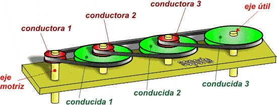
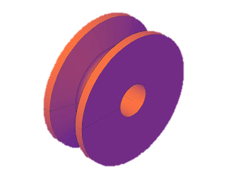
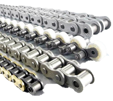
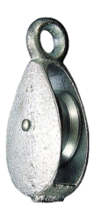
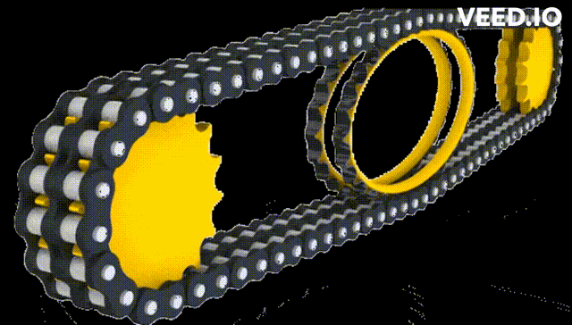

Un tren de poleas con correa consiste en la combinación de más de dos poleas. La relación entre las velocidades de giro de las ruedas motriz y conducida depende del tamaño relativo de las ruedas del sistema y puede expresarse fácilmente en función de sus diámetros

El elemento principal es la polea doble. Un tren de poleas consta de varias parejas de poleas encajadas en las que las intermedias (la 2 y la 3) giran a la vez. Sus elementos son:




Escoge cualquier ejercicio para calcular: